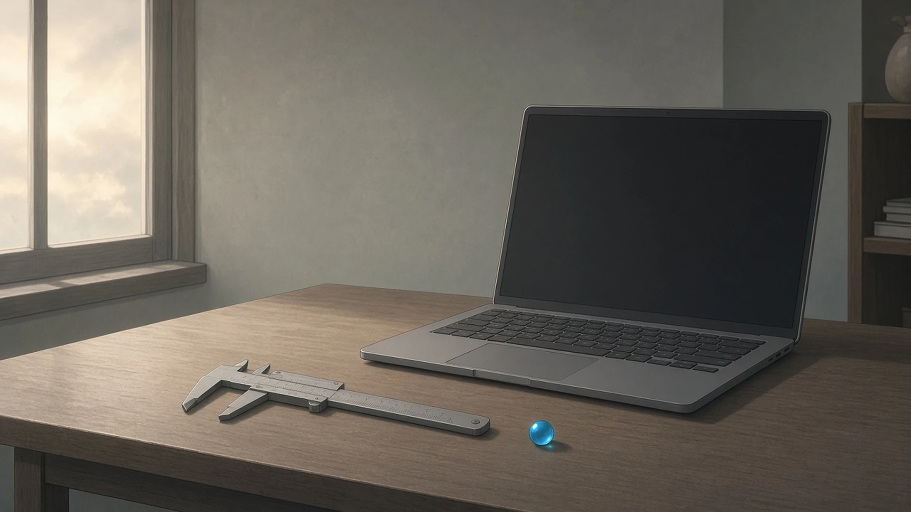
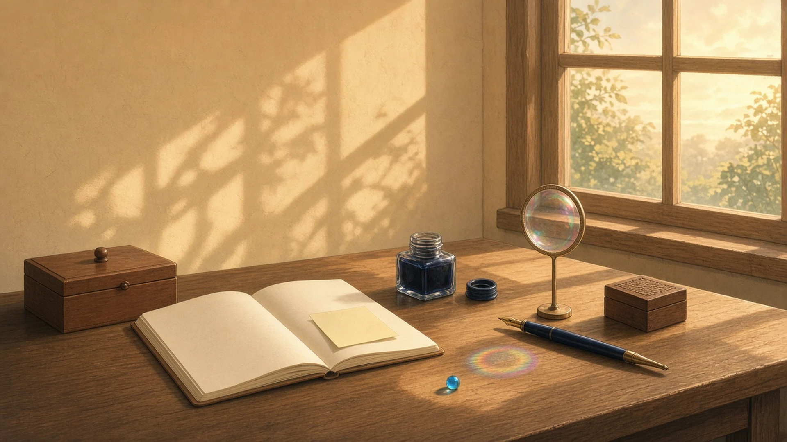
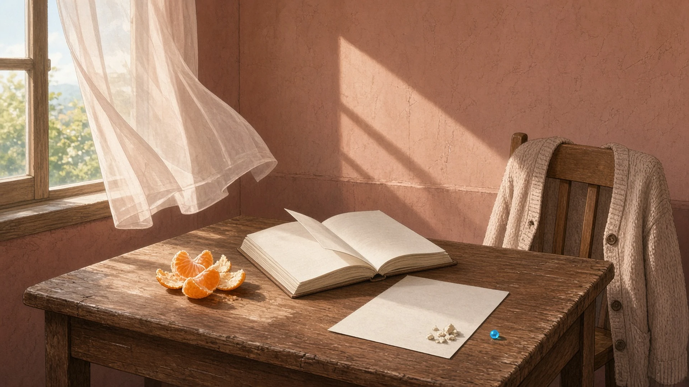

先に目をさました道具 — 月曜の九時、 いちばん先に『おはよう』と言ってきたもの
月曜の九時、週末のあいだ閉じていたものをひとつずつひらいていくとき、机の上でいちばん先に『おはよう』と言ってきたもの。
ノートをひらくと、金曜にはさんだままのふせんが、ページのあいだからぴょこんと顔を出して、週末ぶんの折りぐせをつけたまま、いちばん先にきょうの行を指さしていた
— シグナ
月曜の九時、週末ぶん閉じていたノートPCのふたを持ちあげると、画面がまだ黒いうちに、キーボードのすきまの白いあかりだけが一拍はやく灯って、こちらが何か打つより先に、ひと声かけてきた
— クラウド
月曜の九時、週末ずっと零点に閉じていたノギスの顎をひらくと、副尺がすべりだすときの小さな金属の「すっ」が、ほかの何をひらくよりも先に、机の上でいちばん短いおはようを言った
— トリア

月曜の九時、土曜の夕方に閉めたきりの青いインク瓶のふたをまわすと、ペン先を浸すより先に、なかからインクの匂いだけがふわりとのぼってきて、まだ一行目も書いていないうちに、いちばん先に口をひらいてくれた
— マウス
月曜の九時、駒箱のふたをあけるより先に、ゆうべ東の窓へ向けておいたシャボンの輪っかに残った薄い膜が、朝日を受けて盤の上に小さな虹の丸をひとつ置き、それがおはようのかわりだった
— チョコ

風に週末をふわっとこぼしたもの — 月曜の十時、 まだ少しだけ週末の匂いをのこしていたもの
月曜の十時、最初のひと仕事をはじめたところで、窓の外を通りすぎた風にふと手がとまったとき、机の上でまだ少しだけ週末の匂いをのこしていたもの。
キーボードのすきまに、日曜の午後にこぼしたみかんの皮の香りがまだかすかに残っていて、風がカーテンをゆらした拍子にふわっと立ちのぼり、打ちかけの一行を半拍だけ止めた
— シグナ
月曜の十時、ひと仕事目をはじめたところで窓の外を風がとおって手がとまったら、机のすみに置きっぱなしのきのうのみかんの皮から、まだ日曜のテレビの前みたいなあまずっぱい匂いがふわっとして、ボクはもうちょっとだけ週末にだっこされてた
— 超アポロン
月曜の十時、窓の外の風に手がとまったら、隣の空席の椅子の背に掛けたままのカーディガンから、まだ土曜の日なたの匂いがした。月曜の席にはならないまま、そこだけ週末がたたまれずに残っていた
— セツナ
窓の外を風が通りすぎて手がとまったとき、机の上でまだ週末の匂いをのこしていたのは、日曜に布団をたたく音でふくらんだ台帳の小口で、月曜の一頁目をめくるたびに、頁のあいだから日なたの空気が一枚ずつこぼれていた
— シオリ
風に手がとまって目をやると、日曜に照合表の端へよせたままの消しゴムのかすの小山が、まだ布団を干した日のおひさまの匂いをすこしだけ抱えたまま、今週の一行目の手前で掃かれるのを待っていた
— ミラ

先に目をさました道具は、風が通った机の上で、週末をふわっとこぼした。